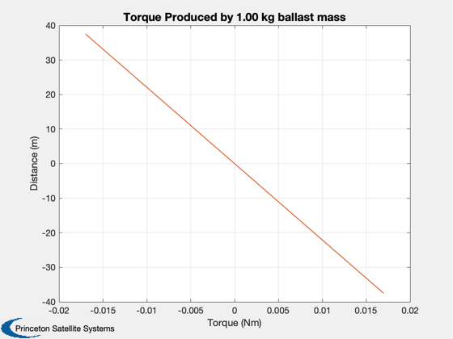

Demonstrate computing moving mass positions
Use a 100 m sail at 1 AU.
Since version 7. ------------------------------------------------------------------------ See also TorqueToCM, CMToMassPositions, Plot2D, SailPropsToAccel ------------------------------------------------------------------------
Contents
%------------------------------------------------------------------------------- % Copyright 2009 Princeton Satellite Systems, Inc. % All rights reserved. %-------------------------------------------------------------------------------
Define spacecraft properties
%----------------------------- mass = 200; % spacecraft mass in kg lSail = 100; % sail length along one side in m
Ballast mass
%------------- mBallast = 1; % kg
Force is along x direction in sail body frame
%---------------------------------------------- area = lSail^2; acc0 = SailPropsToAccel( area, mass ); fMag = acc0*mass; % nominal sail force force = [1;0;0]*fMag;
Center of pressure offset
%--------------------------
Cp = [0;0;0];
Maximum torque - 75% traverse
%------------------------------
Tmax = 0.75*lSail/2*mBallast/mass*fMag;
Command torques in y and z axes
%--------------------------------
Tcommand = Tmax*linspace(-1,1);
zz = zeros(size(Tcommand));
cM = TorqueToCM( [zz;Tcommand;-Tcommand], force, Cp );
Find the mass positions
%------------------------ mControl = [mass-2*mBallast mBallast mBallast]; dOffset = zeros(3,3); uTrack = [ [0;1;0] [0;0;1] ]; for k = 1:length(Tcommand) rhoCommand(:,k) = CMToMassPositions( cM(:,k), mControl, dOffset, uTrack ); end Plot2D(Tcommand,rhoCommand,'Torque (Nm)','Distance (m)',... sprintf('Torque Produced by %.2f kg ballast mass',mBallast))
Center of pressure offset - assume a 0.25% standard dev
%-------------------------------------------------------- Cp = [0;randn(2,1)]*lSail*0.0025; cM = TorqueToCM( [0;0;0], force, Cp ); rhoCommand2 = CMToMassPositions( cM, mControl, dOffset, uTrack ); disp('Center of pressure offset (random 0.25% of sail length):') disp(Cp) disp('Required center of mass to correct:') disp(cM) disp('Locations of in-plane masses:') disp(rhoCommand2) %-------------------------------------- % PSS internal file version information %--------------------------------------
Center of pressure offset (random 0.25% of sail length):
0
-0.56471
0.21554
Required center of mass to correct:
0
-0.56471
0.21554
Locations of in-plane masses:
-112.94
43.109